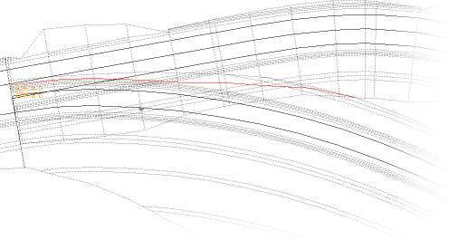
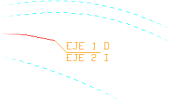
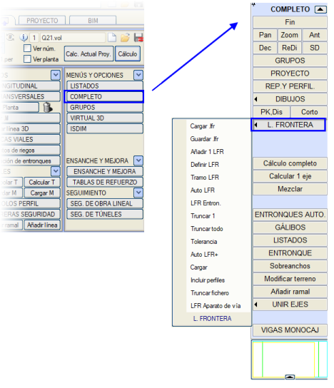
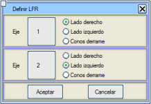
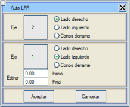
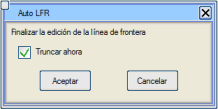
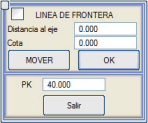
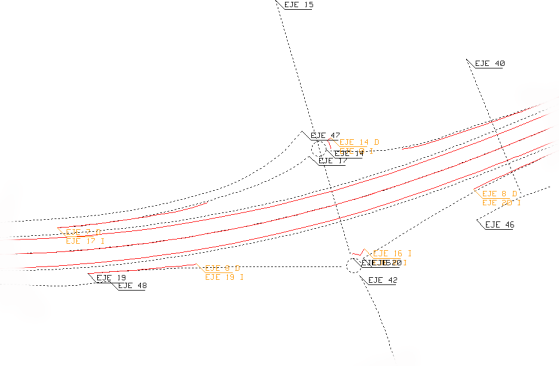

Sınır çizgileri, grafiksel olarak yönetilebilen ve ilgili iki güzergahın enkesitlerini kesmek için kullanılacak bir tür dikey 'duvar' tanımlayan öğelerdir. Bu çizgiler, inşa edilmeyecek kısımları (enkesit çakışma alanı) kaldırır.

Bir sınır çizgisi, daha sonra güzergahları kırpabilmesi için sınır çizgisi nitelikleri verilen herhangi bir çizgi olabilir. Sınır çizgilerinin neden olduğu kırpma ile ilgili olarak, aşağıdaki hususlar dikkate alınmalıdır:
- Aç-kapa tünel bölgelerini de etkiler. Sınır çizgisi, kazı ve dolgu şevlerini kırpabilir, ancak kemer bölgesini kesmemelidir.
- Dökülme konilerini etkiler. Güzergahın sağından veya solundan kırpan sınır çizgileri, dökülme konilerini dış taraftan (dökülme konilerinde dolgu eteği ve tünel ağızlarında yarma başı) kırpacaktır.
- Ayrıca yol çizgilerini de etkiler, öyle ki program, sınır çizgilerinden etkilenen segmentlerini gizler.
Her sınır çizgisi, “kırpması” gereken güzergahların numarası ve hangi taraftan olduğuyla etiketlenir. Eğer çizgi sadece bir güzergahı kırpacaksa, ikinci güzergahın numarası sıfır olarak görünür.

|
Sınır çizgileri, L67 tipi ve onları özel kılan niteliklere sahip geleneksel çizgilerdir. Ancak çizgiler olarak, bir .edm/.edb dosyasında mükemmel bir şekilde değiştirilebilir ve saklanabilir ve niteliklerini kaybetmeden herhangi bir zamanda yüklenebilirler. |
Sınır çizgileri manuel olarak oluşturulabilir ve yönetilebilir, ancak programın belirli bölümleri, kullanıcının müdahalesine gerek kalmadan bunları otomatik olarak oluşturur ve/veya yönetir (güzergahlar arası duvar, kesişimler, kavşaklar,...).
Programın otomatik olarak yönetmediği ve bir lineer proje projesinde kullanılan tüm sınır çizgileri, .lfr uzantılı tek bir dosyada kaydedilmeli ve PROJE tablosunda beyan edilmelidir. Bu dosya beyan edildikten ve her güncellendiğinde, ENKESİT OLUŞTURMA OLAYLARI'nda Sınır çizgileri kutucuğunu etkinleştirerek güzergahlar için arazi enkesitleri çıkarılması önerilir.
Sınır çizgilerinin manuel olarak oluşturulması ve yönetimi, ENKESİT (ALZADO) menüsünden → [KOMPLE] → [SINIR ÇİZGİSİ] aracılığıyla yapılır ve bunun için mevcut araçlar şunlardır:

.lfr Yükle
|
PROJE tablosunda yüklenen .lfr dosyasında saklanan sınır çizgilerini ekranda gösterir.
|
.lfr Kaydet
|
Ekranda düzenlenmiş olan sınır çizgileriyle bir .lfr dosyası oluşturur. Program, kaydettikten sonra, içindeki tüm tekrarlanan sınır çizgilerini kontrol eder ve bulduklarını siler (iki çizginin koordinatlarının tekrarlanıp tekrarlanmadığını belirlemek için bir dosyaya sınır çizgileri eklerken bir tolerans tanımlanabilir).
Sınır çizgileri mevcut bir dosyaya kaydedildiğinde, bu dosyanın aynı adla ancak IS# önekiyle bir yedeği oluşturulur. Ayrıca, program dosyanın tamamen değiştirilip değiştirilmeyeceğini veya o anda KOMPLE ortamında görünen tüm sınır çizgilerinin sonuna eklenip eklenmeyeceğini sorar.
|
1 SÇ Ekle
|
Herhangi bir çizgiyi sınır çizgisi olarak ekler, bu çizginin etkilemesi gereken güzergahları ve taraflarını seçerek. Projeyle ilişkili sınır çizgileri dosyasına eklenir ve eğer yoksa yeni bir tane oluşturur ve ilişkilendirir (temelad.lfr veya ISPOL.lfr).
Dosyanın zaten içerdiği çizgileri analiz eder ve aynı güzergahlar ve taraflar arasında bulunan ve ilk güzergahın km'lerinde çakışan bir çizgi varsa, dosyadaki çizgiyi siler ve yenisiyle değiştirir.
[Ekle] seçeneğinin yanı sıra, döngüsel olarak çalışmak için [Ekle ve başkasını seç] seçeneğini de seçebiliriz.
Bir 8D çizgisi eklendiğinde, sınır çizgisi olarak kullanılmak üzere otomatik olarak bir 3D kopyası oluşturulur.
|
SÇ Tanımla
|
Herhangi bir şekilde oluşturulmuş herhangi bir çizgiyi seçerek, programın ona sınır çizgisi nitelikleri vermesini sağlar. Kullanıcı, bu çizginin etkilemesi gereken güzergahları (grafiksel veya sayısal olarak) ve taraflarını seçer.
Sadece bir güzergahı kırpması isteniyorsa, ikinci güzergah 0 olmalıdır.
Sınır çizgisi, sadece bir güzergahın dökülme konilerini kırpmak için de kullanılabilir. Böylece, örneğin, 1. güzergahı soldan ve 2. güzergahın dökülme konilerini kırpması belirtilebilir.
Bir 8D çizgisi eklendiğinde, sınır çizgisi olarak kullanılmak üzere otomatik olarak bir 3D kopyası oluşturulur.
|
SÇ Kesimi
|
Bu seçenek, kendilerini kesen döngü şeklindeki güzergahlarda sorunları önlemek için, her bir güzergahtaki sınır çizgisinin etki alanını sınırlamayı sağlar. Bir güzergah için aynı başlangıç ve bitiş KM'si verilirse, sınır çizgisi kısıtlanmaz. Kısıtlanmış sınır çizgileri, ekranda kısıtlanmış güzergah ve taraf numarasının arkasında bir yıldız işareti <*> ile görünür.
|
| Oto SÇ |
ENKESİT (ALZADO) menüsündeki [Bağlantı] fonksiyonuna eşdeğer bir fonksiyondur ve platformlar arasındaki kesişimi arayarak destekli bir şekilde bir sınır çizgisi oluşturur, ancak aşağıdaki farklarla:
- Güzergah seçimi grafiksel veya sayısal olarak yapılır, uygulama, hesaplamaları yapmak için dikkate alınması gereken güzergahları ve her birinin tarafını ister.
- Sınır çizgisi, ekranda mevcut olanlara eklenir, bu da daha sonra değiştirilmesine ve mevcut olanlarla birlikte kaydedilmesine olanak tanır.
- Bu çizgileri otomatik olarak önceden belirlenmiş bir mesafe kadar uzatma imkanı sunar.
Sınır çizgisi düzenlemesi bittiğinde, güzergahların kırpılmasını engellemek mümkündür.
Eğer kırpmaya karar verilirse, program o ana kadar ekranda olan verileri kaydeder ve temiz bir ekranda, iki platformun tel kafes modellerini ve şevler arasındaki kesişimle belirlenen sınır çizgisini oluşturarak ekranda çizer. Ayrıca ilk güzergahın dökülme konilerini çizer ve bu konilerin ikinci güzergahın şevleriyle kesişimindeki sınır çizgisini hesaplayabilir.
OtoSÇ veya OtoSÇ+ ile sınır çizgileri hesaplanırken, ilk güzergahla birlikte, onunla tanımlanmış tüm kesişim ve dönel kavşak birleşim yerleri çizilir ve bu modeller, ikinci güzergahla olan sınır çizgisini belirlemek için kullanılır. (Proje menüsünün Kesişimler seçeneği etkin olmalıdır).
|
Kavşak SÇ
|
Bu seçenek aracılığıyla, her bir güzergahta tanımlanan kavşaklar için tüm sınır çizgileri otomatik olarak oluşturulur. Bir kavşağın sınır çizgisinin oluşturulması için, ENKESİT (ALZADO) menüsündeki KAVŞAKLAR bölümünde o kavşak için SÇ kutucuğunun etkinleştirilmiş olması gerekir. Ayrıca, Pay kutucuğuna bir değer girilirse, sınır çizgisi, E noktasından başlayarak KM = KM_E + Pay'a kadar, hesaplandığı iki güzergahın şevlerinin kesişimi boyunca uzatılır. Eğer genişletmelerin E noktasına kadar hesaplanacağı belirtilmişse, sınır çizgisi A'dan oluşturulmaya devam etse de, uygulama aralığı E'de başlayacaktır.
Bu seçenek başlatıldığında, program aktif gruplardaki tüm güzergahların bir hesaplamasını yapar.
Projenin sınır çizgileri dosyasını, hesapladığı çizgilerle oluşturur veya günceller.
|
| Oto SÇ+
|
Oto SÇ ile aynıdır, ancak sınır çizgisinin konumunu ardışık enkesitlerden interaktif olarak değiştirmeye olanak tanır. Seçenek, her iki güzergahın aynı anda göründüğü ilk enkesite kadar otomatik olarak ilerler, kesişmeseler bile. Kesim noktası hesaplamasına, branşın uygun olmayan zemindeki yarma çizgisi de eklenir.
[Çıkış] butonu, mevcut KM'de sınır çizgisi tanımını sonlandırmak için kullanılırken, [KM] butonu ile istenen KM'ye otomatik bir ilerleme yapılır.
Oto SÇ aracında olduğu gibi, sınır çizgisi düzenlemesi bittiğinde, güzergahların kırpılmasını engellemek mümkündür.
Bu araç, ilk güzergahın dökülme konilerini çizer ve bu konilerin ikinci güzergahın şevleriyle kesişimindeki sınır çizgisini hesaplayabilir.
OtoSÇ veya OtoSÇ+ ile sınır çizgileri hesaplanırken, ilk güzergahla birlikte, onunla tanımlanmış tüm kesişim ve dönel kavşak birleşim yerleri çizilir ve bu modeller, ikinci güzergahla olan sınır çizgisini belirlemek için kullanılır. (Proje menüsünün Kesişimler seçeneği etkin olmalıdır).
|
| 1'i Kırp |
Bu seçeneğe tıklandıktan sonra, ekranda görünen sınır çizgilerinden biri seçilir ve sistem, daha önce hesaplanmış olmaları koşuluyla, her bir etkilenen güzergahı ona göre kırpar.
Eğer bir güzergah için PROJE tablosundaki [BAĞ] (bağlantı) tuşu basılı değilse, bu güzergah kırpmalara karşı korunur ve bu seçenek, onu etkileyen sınır çizgileri olsa bile üzerinde çalışmaz.
|
Tümünü Kırp
|
1'i Kırp ile aynı işlemi yapar, ancak tüm sınır çizgilerini kullanır. Korunan güzergahlar dokunulmaz, ilgili ISPOL#.per dosyaları bozulmadan kalır.
|
| Tolerans |
Bu tolerans, yinelenen çizgileri olan dosyaları önlemek için bir sınır çizgileri dosyası kaydedilirken uygulanır.
|
Yükle
|
.lfr dosyalarını yüklemeyi sağlar. Bu, tek bir dosyada birleştirmek için birkaç sınır çizgisi dosyasını yüklemeyi mümkün kılar.

|
Enkesitleri Dahil Et
|
Bu seçenek, bir sınır çizgisine, ilgili iki güzergahın enkesitleriyle kesişim noktalarını ekler. Bu şekilde, eğer her iki güzergahta da sınır çizgilerine göre enkesitler enterpole edilirse, bu bölgede her iki güzergahın enkesitleri sınır çizgisi üzerinde çakışacaktır.
|
Dosyayı Kırp
|
Herhangi bir enkesit dosyasını (bir güzergahla ilişkili) seçmeyi ve mevcut sınır çizgilerine göre kırpmayı sağlar. Bu seçenek çıktı için bir dosya ister.
|
Makas SÇ
|
Bu araç, J.C.A. numarasından yola çıkarak, makas içinde ana ve sapma hatlarının ray aralarının açıortayından geçen ve topuktan sonra ana ve branş güzergahlarının balast ve formasyon tabakasının dış şevleri arasındaki kesişimleri arayan bir sınır çizgisi oluşturur. Bu sonuncularından yarma veya dolgu şevlerinin kesişimini arar. Eğer sapma güzergahı makasın topuğunda başlıyorsa, sınır çizgisi o noktada başlayacaktır.
Oluşturulan çizgiyi projenin sınır çizgileri dosyasına dahil etmeyi, aynı bölgede daha önce oluşturulmuş başka bir çizgiyi değiştirerek sağlar. Ayrıca, oluşturulan çizgiyle güzergahları hemen kırpmayı da sağlar.
Bu aracı kullanmadan önce, orijinal şevler arasındaki kesişimin doğru bir şekilde belirlenebilmesi için, eğer bu güzergahlar daha önce ilgili bölgede kırpılmışsa, güzergahların boykesitini hesaplamak uygundur.
|
Güzergah SÇ Oluştur
|
Dönel kavşak güzergahı ve genel olarak herhangi bir güzergah için bu araç kullanılabilir. Bu yardımcı program, güzergahın ISPOL.per dosyasından kırpıldığı bölgelerin bilgisini çıkarır ve planda sınır çizgilerini oluşturur.
|
|